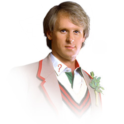

The Doctors
|
The 5th Doctor

The Fifth Doctor is an incarnation of the Doctor, the protagonist of the BBC science fiction television series Doctor Who. He is portrayed by Peter Davison.
Within the series' narrative, the Doctor is a centuries-old Time Lord alien from the planet Gallifrey who travels in time and space in his TARDIS, frequently with companions. When the Doctor is critically injured, he can regenerate his body; in doing so, his physical appearance and personality change. Davison portrays the fifth such incarnation, a staunch pacifist with a vulnerable side and a tendency towards indecisiveness, dressed as a boyish Edwardian cricketer. He travelled with a host of companions, including boy genius Adric (Matthew Waterhouse), alien aristocrat Nyssa (Sarah Sutton) and Australian flight attendant Tegan Jovanka (Janet Fielding), whom he had travelled alongside in his previous incarnation. He also shared later adventures alongside devious schoolboy Vislor Turlough (Mark Strickson) and American college student Peri Brown (Nicola Bryant).
|